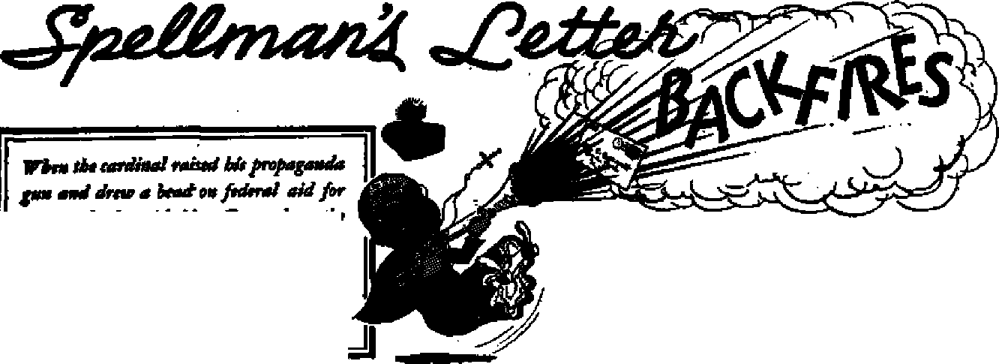

THE MISSION OF THIS JOURNAL
News sources that are able to keep you awake to the vital issues of our times must be unfettered by censorship' and selfish interests. “Awake T* has no fetters. It recognizes facts, faces facts, Is free to publish facts. It is not bound by political ambitions or obligations; it is unhampered by advertisers whose toes must not be tread upon; it is unprejudiced by traditional creeds. This journal keeps itself free that it may speak freely to you. But it does not abuse its freedom. It maintains integrity fo truth.
“Awake 1’* uses the regular news channels, but Is not dependent on them. Its own correspondents are on all continents, in scores of nations; From the four corners of the earth their uncensored, on-the-scenes reports cbme to you through these Columns. This Journal’s viewpoint is not narrow, but is international. It is read in many nations, in many languages, by persons of all ages. Through its pages many fields of. knowledge pass in review—government, commerce, religion, history, geography, science, social conditions, natural wonders—why, its cover* age is as broad as the earth and as high as the heavens.
“Awake lrf pledges itself to righteous principles, to exposing hidden foes and subtle dangers, to championing freedom for all, to comforting mourners and strengthening those disheartened by the failures of a delinquent world, reflecting sure hope for the establishment of a rights eouS New World.
Get acquainted with “Awake!’* Keep awake by reading “Awake!”
Published Semimonthly By WATCHTOWER BIBLE AND TRACT SOCIETY, INC.
117 Adams Street
N. H. KNfitte, President
F/ve c<srtt» a copy
RenHtinrit ehotiH be nut to in your country In tompllance with regdhtioiu io fuarantw ufe delkrery of mow. BeMlttances art accepted at arooJelpo Jrara countries where do office is located, by international money order only. Butecription rate* In different countries are here stated in local Correney, '
Not lev nt •xplfatloo (with renewal blank} U «ect At least two Imus before nb»crlp*» expires.
Bxuotlyn 1, N. Y., U, S. A. Geant Suiter, Secretary Ont dttltr x year
Chuai of addrau when sent to <w office may tn expected effective nlthlu one month. Seed jour old M well m rutw address.
Offices
Yearly Subscription Hit*
Amerfts, if,®., ik Atrinw gt.f Brcwkiyc 1. O. Amtrtfia. 11 SeresfOTtiM., StrstiifrM, N.8.W. Cinria, 40 Irwin Ave., Toronto 5, Ontario Enf land, 34 Craven Terries, LondOD, W. 2 Srith Africa, 423 BoaioR House, Cape Town
fl 6s 11 51
Bateretf u aocambctasa natter at N- Y, Act of March 3, 1879. Printed in U. & A.
CO N T E N T S
Cardinal’s Curse Turned into a Blessing
Flimsy Argument
Some Facts to Recall
How the Curse Becomes a Blessing
Blessings That Are Actually Curses
Spellman's Letter Backfires
Public Figures Speak Out
Voice of the People
President Truman’s Position
Feathered Fishers
Bait but No Hook!
Catholic Authorities Look at Crime
3
4
5
6
8
. 8
9
11
11
13
14
16
Free Speech Wins Another Battle
Ecuador Suffers as the Earth Quakes
Awake! Correspondent in Quake Area
uThy Word Is Truth”
^"Now it is high time to awake.— Romans 13:11
Volume XXX Brooklyn, Nr Y., October 8, 1940 Number
Spellman’s spat with Mrs. Roosevelt should be a revelation to all Americans
CARDINAL Spellman of New York burst into the front pages of the pub’ lie press when he penned his letter of July 21 to Mrs. Franklin D. Roosevelt. His blast started a chain reaction of explosions that dominated the headlines for days afterward. So intense an attack, charged with emotion and adverse judgment, and with an* arbitrary finality slamming the door against further discussion, sounded like the pronouncement of an ancient curse from which there would be neither appeal nor escape. Nevertheless, the cardinal’s spat with Mrs. Roosevelt led to beneficial results. Remember how centuries ago Balaam was hired to curse Israel, but that “God turned the curse into a blessing”? (Nehemiah 13:2) So this letter that fell like a curse can also be viewed as a blessing. A review of the facts and issues of the case will show why.
On June 23 Mrs. Roosevelt in her column “My Day” took a stand for federal aid to education, but limited to public schools. Columns dated July 8 and July 15 enlarged upon her position. Only in the June 23 column was Spellman mentioned, it opening with the words: “The controversy brought about by the request made by Francis Cardinal Spellman that Catholic schools should share in federal aid funds forces upon the citizens of the country the kind of decision that is going to be very difficult to make.”
This the cardinal interpreted as a “personal attack” upon him, and opened hie letter with the following paragraph:
When, on June 23d in your column “Mj Day” you aligned yourself with the authoi and other proponents of the Barden Bill and condemned me for defending Catholic children against those who would deny them their constitutional rights of equality with other American children you could have acted only from misinformation, ignorance or prejudice, not from knowledge and understanding!
Yet Mrs. Roosevelt used no word of condemnation against the cardinal, and no need exists to defend Catholic children against inequality, since they are welcome at public schools, just as are children of Protestants and Jews and atheists. Or, Catholic parents are, free to establish and finance private schools for their children, just as are Protestant or Jewish or atheistic parents. The issue of equality is imaginary. And since the premise of condemnation and inequality is unsupportable, the judgment of misinformation, ignorance or prejudice based thereon vanishes.
The“cardinal scolded the lady for not reading an address he delivered at Fordham University concerning federal aid to education. Did you rpad it? Yet a glance at the newspapers was sufficient to inform you that Spellman wanted, the government to help support Catholic schools. He chided Mrs. Roosevelt for
not carefully studying the Bardefi bill that would grant federal aid only to public schools. MJhat’s the point of his chiding! Who knows! Mrs. Roosevelt never championed the Barden bill. In fact, she said: "I have been rather careful not to say if I am for or against any particular bill or bills.”
After insinuating that Mrs. Roosevelt launched a “personal attack” against him because her faith differed from his, and not because of her belief in the American tradition of separation of church arid state, he tells why he wrote his letter to her: “I have received hundreds of messages from persons of all faiths demanding that I answer you. I am, therefore, not free to ignore you.” Can this be true! Such a broad statement. Persons of all faiths demanding that a Catholic cardinal speak for them 1 Or was it persons of only twenty faiths ! or fen! or two! Such sweeping claims are always suspect, and thinking persons find that such broad statements cannot be swallowed whole with safety. Let the cardinal drop the pose that he speaks for all faiths.
Flimsy Argument
“‘Taxation without representation is tyranny’ was the cry that roused and rallied our pioneer Americans to fight for justice. Taxation without participation should rotlse today’s Americans to equal ardor to protest,” the cardinal continued. A ruse of propagandists is to associate the point they want to sell you with another point on which you are already sold.. So the tricky rhetoric that links “taxation without representation” to “taxation without participation” does not prove the latter to be tyranny because the former is.
What about this new political doctrine of the political cardinal! Is it sound! He argues Catholics should not be taxed for a school program in which they do not participate. Now let this principle hurdle the bounds of a narrow mind on a single track, and see the result. You are single, or married but childless! Then pay no school taxes. You have no car! Then pay no tax for roads. You don’t use national or city parks! Withhold the taxes you pay for their upkeep. You don’t go to 'public libraries! Stop your tax payments for their support. Do ■you use the courts *of law! live, in the jails! lie in public charity hospitals! rave in the tax-supported asylums! die in the county poorhouses! fight in the expensive wars! use goods delivered by the Marshall Plant favor supporting Myron Taylor as a representative to the Vatican! Maybe not. But you pay for it all. Taxed for it, without participating in jt. The list of “taxation without'participation” examples could grow indefinitely, but the consequences have been enforced enough to reduce it to absurdity.
Up to this point the cardinal’s letter displayed reason at low tide and emotion at high tide, but hereafter all attempts to reason are drowned in the continuous tidal wave of tears that his emotional rhetoric gushes out. One can almost hear the quavering voice of the overcome churchman as it fights its way through a lumpy throat to say:
But why I wonder do you repeatedly plead causes that are anti-Catholic ? Even if you cannot find it within your heart to defend the rights of innocent little children and heroic, helpless men like Cardinal Martyr Mindszenty, can you not have the charity not to east upon them still another stone!
America’s Catholic youth helped fight a long and bitter fight to save all Americans from oppression and persecution. Their broken bodies on- blood-soaked foreign fields were grim and tragic testimony to this fact. I saw them there—on every fighting front—as equally they shared with their fellow-fighters all the sacrifice, terror and gore of war—as alike they shared the little good and glory that sometimes comes to men as together they fight and win a brutal battle.
Would you deny equality to these Catholic boys who daily stood at the sad threshold of
untimely death, and suffered martyrdom that you and I and the world of men might live in liberty and peace?'Would you deny their children equal rights and benefits with other sects—rights for which their fathers paid equal taxation with other fathers and fought two bitter wars that all children might forever be free from fear, oppression and religious persecution ?
During the war years you visited the hospitals in many countries, as did I. You too saw America's sons—Catholic, Protestant and Jew alike—young, battered, scarred, torn and mutilated, dying in agony that we might learn to live in charity with one another. Then how was it that your own heart was not purged of all prejudices by what you saw these, our sons, suffer?
All of this is calculated to paint Eleanor as a fiend, delighting in if not responsible for all the sad scenes above pictured. She stones little children, stones Mindszenty, scoffs at Catholic boys who fought on battlefields for her, denies their children equality, and looks at the hospitalized soldiers with a heart filled with prejudice against them.
During the Mindszenty controversy Mrs. Roosevelt described him as “the center and symbol of resistance during the Nazi occupation” and a naan of “fearless actions” and wrote: “There is no excuse for the action that has been taken by the government and, since in Hungary the government is, practically under the control of Russia, the Soviet Union cannot escape the blame.” That was not “still another stone” on Mindszenty.
Yet Spellman glibly misrepresents Mrs, Roosevelt. Why? To hint and imply what he fears to say openly—that he considers her a Communist sympathizer. For the dull-witted, Monsignor John Cartwright of Washington made the Red smear plain when he commented on Spellman's letter, saying that Mrs. Roosevelt was “very sentimental and a little more than tolerant toward the Reds and the Communists and the friends of Russia in this country—for as long as it was safe to be so” and that in the Spanish civil war she “lent her prestige to the Loyalists”. The hierarchy branded the latter Reds, though they were largely Spanish democrats fighting the black Fascism of Catholic dictator Franco. Actually, Spellman cannot shake Mindszenty from mind. Spellman craves for the United States what Mindszenty lost in Hangar y—government-supported but Catholic-run schools.
When Spellman in his letter struck a patriotic pose and emoted about Catholic “broken bodies on blood-soaked foreign fields” and lying ftbatteredj scarred, torn and mutilated, dying in agony” in hospitals he strayed far from the subject of federal aid to education. But to stray with him for a moment, we recall that not only did a minority of Catholic youths fight for America, but also a far larger proportion of Catholics were in Hitler's armies fighting against Americans. Catholic killed^ Catholic. Would Jesus have beheaded Peter to please Caesar?
Moreover, we recall that before World War II began a group of prominent Catholics in America appealed to the pope to excommunicate Catholic Hitler, but were tersely told to tend to their own business. Excommunication could have broken Hitler's power in the strongly Catholic Greater Reich and nipped World War II in the seed stage. Supporting the Communist cause is a sufficient crime to draw papal excommunication, but apparently strewing earth's gory battlefields with Catholic and other broken bodies is not. Spellman should have addressed his patriotic palaver ,to the pope, not to Mrs, Roosevelt.
Of course, the point that his inflammatory rhetoric burned to make was that the offspring of these broken Catholic bodies should be on an equality with othei* American children; but it goes up in smoke, without substance, since no inequality exists., As explained before. Catholic children are free to attend public schools or parochial schools. The majority attend public schools, free of charge.
Jfrs. Roosevelts Unwanted Reply
Cardinal Spellman concluded his letter:
Now my case is closed. This letter will be released to the public tomorrow after it has been delivered to you by special delivery today. And even though you may again use your columns to attack me and again accuse me of starting a controversy, I shall not again publicly acknowledge you. For, whatever you may say in the future, your record of antiCatholicism stands for all to see—a record which you yourself wrote on the pages of history which cannot be recalled—documents of discrimination unworthy of an American mother I .
The cardinal felt that with his tirade the subject should close. He favored a hit-and-run letter. By saying he would not answer again he was tacitly suggesting to Mrs. Roosevelt that she make no reply and print no more in her column regarding federal aid to education. And if she did continue the subject in her column, then he would 'remain dumb as the sheep before the shearers and as the lamb that opens not its mouth when led to the slaughter*. He spoke of her 'record of anti-CathoHcism which cannot be recalled*. True. We cannot recall such a record, nor did the cardinal recall it to back his reckless charges.
As for the unmanly and unworthy final thrust, "documents of discrimination unworthy of an American mother/* we let Mrs. Roosevelt ably answer it. She did answer Spellman's letter by one of her own to him, dated July 23. She said that she had never advocated the Barden bill, that she believed in the public school system, that she thought the real religious teaching of the child must be done m its own church and home, that free medical care should be available to all children but not tied in with any school, that the history of Europe shows that "the domination of education or of government by any one particular religious faith is never a happy arrangement for the people”, that she had no bias hgainst Catholics and supported Catholic Al Smith and other Catholics for political office, that she spoke out against unfair trials and religious persecution at the time of the Mindszenty case, that when she visited hospitals she was concerned about the boy in the bed and not his religion, that she had no intention of attacking the cardinal or his church but that she would continue to stand for things in government that she thought were right, and concluded:
I assure you that I have no -sense of being “an unworthy American mother”. The final judgment, my dear Cardinal Spellman, of the worthiness of all human brings is in the hands of God.
How the Curse Becomes a 13 les sin ff
"We owe Cardinal Spellman a debt of gratitude for letting the cat out of the bag. The whole country now must be aware bf what the real issue is. It knows the intentions of the Catholic Hierarchy/* So spoke Congressman Steed of Oklahoma, and with those words he indicated how the curse could become a blessing. It is generally conceded in Congressional circles- that the Spellman assault on Mrs. Roosevelt has killed any action on aid to education this year; but even this steep price is cheap if the people and the nation awaken to the Hierarchy's purpose to dominate the school system and eventually overthrow the principle of separation of church and stBfte. Methodist Bishop G. Bromley Oxnam spoke of such an awakening on August 7 over radio station WWDC, saying:
The American people have recently learned that federal aid to education in this session of Congress is dead. Most of our citizens deplore this fact. The Roman Catholic Hierarchy is responsible for killing the bills that might have brought aid to our public school systems. Far more children from Roman Catholic homes attend public school than parochial school. It will come as a shock to these parents when they learn the hierarchy is responsible for denying their children higher education standards. Thousands of loyal and able Roman Catholics are teachers in the public schools. They will not forget that the much-needed salary increase was denied them by the action of the hierarchy. The blind may lead, but the eyes of their followers will open.
We dare not speak in pleasantries when the American principle of separation of church and state is in jeopardy. The hierarchy has launched a full-scale attack upon this principle. Cardinal Spellman’s personal attack upon one of ^he greatest women of American history, Mrs. Eleanor Roosevelt, reveals the method that we may expect from men determined to master American life. . , .
One could wish that the cardinal were more candid and less crafty. It is not milk and medicine, books and buses. What he wants is the support of parochial schools by taxes levied on all the people. In a word, he seeks public funds for sectarian education. The Church not only wants public funds for private purposes, but must know that to drain off vast sums from public education is to so weaken it as eventually to destroy it. . . .
Many people do not know that the Roman Catholic Church is fighting for its life in Europe. It has become so interlocked in political affairs of state, so encumbered with vast land holdings, and so allied with military and feudal reaction that the common people are turning from it. . . . When the American people realise how far the world political organization of the Roman Catholic Church has moved into American life, there will be a reaction that will astound men who have the audacity to announce an_ attempt at excommunication of Protestants.
L F. Stone, columnist writing for the Sunday Compass of July 24, told how the reckless quality of the cardinal's letter might cause the public to view in a different light the Catholic propaganda on events in Eastern Europe, a propaganda that precipitates repeated international OCTOBER 8j 1949
crises and raises the temperature of the cold war. Mr. Stone wrote:
The fury of the cardinal’s attack on our respected and beloved First Lady of the New Deal will do the Church a disservice, but it may have a cooling effect on public opinion in this country. It may serve to illustrate the fact that events in Eastern Europe are not quite as irrationally mad and criminal as the hierarchy would like us to believe.
I do not know enough to pass on the merits of the Mindszenty case, but the issues between him and the Hungarian government were not So different from those between the American cardinal and Congress. Mindszenty opposed land reform and state control of education. This alone by no means made him guilty of treason. It does serve to show that the issues were not peculiar to ^Communist godlessness” but concerned reforms long established in other countries.
I hope to return to this subject again soon, and will make but one more point at this time. It is important to notice that revolutionary movements, like Communism are Strongest where authoritarian churches have exercised state power, and weakest in the so-called “secular” states the Church deplores.
Where did the first successful Communist revolution occur? In Russia, where the Orthodox Church had the czar’s full support in controlling the minds and consciences of men. Where is the second largest Communist party in Europe today? In Catholic Italy, in the pope’s own backyard. Where has the Church suffered most in this hemisphere? In Catholic Mexico, where the priesthood held nuchal lenged sway for centuries. Where is the Catholic Church most secure? In America, where church and state have been kept scrupulously separated from the time ’ of the Revolution,
Thte lesson is written on the blackboard of history Urge and plain. The cardinal would do well to glance at it.
In addition to showing Hierarchy political aims in America and the tactics of smear and falsification of Catholic propaganda, which make us question the accuracy of the picture of Catholic persecution in Eastern Europe, the aftermath of the cardinal's letter was a blessing in that it showed many politicians, editors, columnists, Protestant clergymen and common people, among them Catholics, still have courage to speak plainly against a cardinal of the Catholic Church—a quality so long hidden that its existence began to be doubted. For an array of such courageous-expressions please see the article that follows.
Tn her reply to Spellman Mrs. Roosevelt observed: “I cannot^ however, say that in European countries the control by the Roman Catholic Church of great areas of land has always led to happiness for the people of those countries.” The'facts would not allow anyone to say it, truthfully. Where are the blessings of the Catholic Church in South American countries? and in Spain, where Protestant activities in worship and schooling are crushed? Catholic domination and culture and parochial schools for nations overwhelmingly Catholic have resulted
*------*
fiMic tcboois, writ Mn. at Uu
bulTt-tye of bit target, the kickback from fbt diicbargt was quick and powerful. Tbit article fuufmanxet the public reac-lic» io Spellman’s letter.
4 fT MUST acknowledge in my column
I the numerous telegrams and letters that have come to me in the last few days. I am a little overwhelmed by the amount of mail that confronts us. as a result of Cardinal Spellman's letter. . . . in dictatorial government, arrogant priesthood,. abject poverty, extreme highs in illiteracy and extreme lows in morality, where men have several women and illegitimate births are so common as to go unnoticed. Where the Hierarchy controls the government she is not interested in expending funds for improving the parochial school system or spreading democracy or bettering living standards or boosting morality.
From a far-sighted focus on foreign lands change to a near-sighted view. Look at America. Are Catholic culture and parochial schooling making Catholics exemplary citizens, outstanding as a group? For the answer to this read the short article on page 16 of this issue, and which is based upon figures compiled by Catholics. Just as Spellman’s letter intended as a curse turned out to be a blessing, so the supposed- blessings of the Catholic Church turn into curses for the recipients. It has happened as God foretold to unfaithful religious priests: will curse your blessings,”—Malachi 2: 2.
Anyone accustomed to hearing from the public knows that those who disagree usually write in far greater numbers than those who agree. In this case, however, the reverse seems to be true.” Thus wrote Mrs. Roosevelt in her column “My Day” for July 29.
Similarly, the public reaction expressed through the news channels of press and radio was overwhelmingly in defense^of Mrs. Roosevelt and sharply critical of the cardinal. The following quotations are typical reactions of columnists and editors.
We believe that Cardinal Spellman will come to realize that Mrs. Roosevelt cannot be justly charged with prejudice or bigotry. —N. Y. Times, July 26.
Francis Cardinal Spellman has aligned himself with the most reactionary elements in public life today by -his purposeful attack upon federal aid to education, ... I have previously expressed myself as tolerant, at this time and for expedient reasons, of tax exemption and public bus service for parochial schools conforming to state regents’ Standards of education, on the ground that there are not yet sufficient public schools to house our children for educational purposes. I hereby withdraw that support, and confess error. It is clear that it is a serious mistake to compromise at any point with those who seek to encroach upon the state’s functions.—N.Y. Daily Compass, July 25.
To assail Mrs. Roosevelt as having “a record of anti-Catholic ism .. . unworthy of an American mother” because she stated with care and sympathy what every American knows to be true, is as flagrantly unjust as it is ill-mannered. The Courier-Journal favored the senate’s handling of the issue of aiding religious schools [which allowed federal aid to parochial schools if the individual states wished it] ... Cardinal Spellman’s strident defense of this position [government aid to parochial schools] has forcecj many people who otherwise would have let the issue ride to re-examine their conscience and to make a stand. In our case this stand has to be for the principle that only public education can be financed by public funds.—Louisville Courier-Journal, July 23.
We believe Cardinal Spellman is probably wrong and Bishop Oxnam, Representative Barden and Mrs. Roosevelt are fundamentally right in the discussion over federal aid to private and parochial schools.—Pontiac Daily Press, July 28.
Some of the off-the-record comment on the cardinal by New York politicians who are good Roman Catholics has been sulphurous enough for excommunication, but even the so-called “liberal Catholics” are scared stiff of coming to Mrs. Roosevelt’s defense.—I. F Stone, N. Y. Daily Compass, July 26.
If Mrs. Roosevelt wants my help she can have it. Not that she may need it. She is not liable to excommunication. She has her. own road to heaven and her papers are in far better order, I dare say, than Westbrook Pegler’s or Francis Cardinal Spellman’s or mine.—Jennings Perry, N. Y. Daily Compass, July 26.
Cardinal Spellman’s denunciation of Mrs. Franklin D. Roosevelt is a tragic document. It is unjust, unfair and unworthy of a man to whom millions of Americans look for spiritual guidance. . . , Mrs. Roosevelt has always spoken her mind and welcomed dissent on that level. But the cardinal’s charge that her position oii tthe education bill climaxes a “record of anti-Catholicism” is a terrible and baseless assertion. . . . This is cruel and inflammatory rhetoric founded on a misstatement.—N.Y. Post Home News, July 24.
Politicians, clergymen, educators and organizations all took courage in numbers and spoke out against Spellman’s insulting letter. Some of the spokesmen, it is noteworthy, are ‘Catholics. One of the first political figures to speak boldly was former Governor Herbert H. Lehman. Others followed, .taking courage as public indignation snowballed to imposing proportions. Excerpts of their statements follow.
I am deeply shocked at the attack of Cardinal Spellman on Mrs. Roosevelt. ... The -issue is' not whether one agrees or disagrees with Mrs. Roosevelt jon this or any other public question. The issue is whether Americans are entitled freely to express their views on public questions without being vilified or accused of religious bias.—Herbert H. Lehman, N. Y. Times, July 24,
I have never answered the cardinal and I'm just letting him talk. As far as Mrs. Roosevelt is concerned, her reputation for tolerance is well known and needs no-defense at my hands. I learned long ago that when the eagles appear it is time for the sparrows to retire. —Representative Barden, author of the bill restricting federal aid to public schools, and branded by Spellman as the “new apostle of bigotry”; N. Y. Times and N. Y. Past Horn# News, July 24.
Your open letter to Mrs. Franklin D. Roosevelt makes it necessary for me, a former representative of the Department of Justice on the committee appointed by President Franklin D. Roosevelt to codify the citizenship laws of the United States, to reveal that, under the Nationality Laws of the United States, 1940, Section 401 (B) (D), then and now in force, you lost your American citizenship in 1946; that you are not now speaking as an American citizen, but as an alien; that you are now the representative of a foreign state whose purpose it is to destroy the constitutional political principles of the United States. There are millions of loyal American Catholics in the United States who, 1 believe, do not know that you deliberately expatriated yourself. They accept your leadership in political matters as though you were still a loyal American citizen.—Telegram sent to Spellman by Albert Levitt, former special assistant to the United States attorney general, according to INS dispatch of July 24.
Representative Tom Steed, Oklahoma Democrat, wrote Mrs. Franklin D. Roosevelt today that Cardinal Spellman's letter criticizing her stand on federal a|d to public schools was “a masterpiece of distortion, misrepresentation and deliberate twisting of the truth”. "I am writing you to say that in all my experience I have never read a more clever bit of propaganda than this letter. It could not have been written by anyone except a man who holds no regard for God's justice or truth —it was written by an expert of the highest skill and is the best example of the ‘smear’ that I have ever noted.”—AP dispatch of July 23.
The language used against her will bring no good to either my church or my country. I regret ’it exceedingly. ... As long as we have the same right to send our children to public schools as anyone else, we are not discriminated against, and as Catholics we do not have the right to a separate publie-supported school system, nor does any other group of people have such a right—Representative Andrew Jacobs, outstanding Catholic layman, in Pontiac Daily Press and INS dispatch. '
On a radio program titled fTs Congress Doing Its Job?” four Congressmen appeared. Two of them were Representatives Steed and Jacobs quoted above, and the other two expressed similar sentiments. Ed Hart, conductor of the program, apologized for not having the opposition view presented. He made strenuous effort to find a Catholic Congressman who would speak for the cardinal's views but found none. It was at a then future session of this program th^t Methodist Bishop Oxnam spoke on this issue, as quoted in the leading article concerning Spellman's letter. At that time Hart invited Spellman to appear, but the invitation was refused.
Space forbids any more than a fragmentary quoting of additional expressions, but even that gives a fast feel of the public pulse. Dr. John Norton, ♦professor of education at Columbia University^ Teachers College, said that namecalling should cease, that “Americans should not be called bigots,.atheists or Communists merely because they differ with ecclesiastical officers” and Roman Catholic clergy who feel “any disagreement with them is an attack on them and their religion” should revise such feeling. Norman Thomas claimed that the cardinal's “intemperate language” suggested “a weakness of his case”. Many individual clergymen and several religious and civil organizations joined their voices to the general protest of the cardinal's charges..
Papers throughout the nation printed letters from readers concerning the Spellman-Roosevelt controversy. The majority ran in the same vein of condemnation of the cardinal as do the foregoing quotations. A few excerpts: from the public follow.
The headlines "Spellman Assails Eleanor” are in error. The correction should read "Spellman Assails United States Constitution”.—Milton Smith.
We are against public tax aid to parochial church schools, Millions of intelligent, responsible, unbigoted Christians are against it. Those same millions are not anti-Catholic when they express their opposition.—Richard Allen.
As for Cardinal Spellman's ridiculous spiel about the "poor little Roman Catholic children”, he had me almost in tears to think the poor little things have to take the same that the Protestant, Jewish and other children do. —E. Jones.
Cardinal Spellman has rendered a great disservice to the Catholic cause and alienated a great many friends of the church by his unjust attack on Mrs. Roosevelt.—M. Dunn.
As a Catholic, who calls himself a "liberal”, let me warmly thank you for reprimanding Francis Cardinal Spellman when he stepped out of line. Certainly his attack on Mrs. Roosevelt, who helped to frame the UN Bill of Human Rights, was extraordinarily unfounded.—J. O'Connor.
It is surprising that a man of Cardinal Spellman’s position can only attempt to prove his point by resorting to a childishly immature method of name-calling, instead of logic and reason.—M. Whitelaw.
It surprises me that a cardinal, who should preach "Love thy neighbor as thyself”, should in public print violate the commandment "Thou shalt not bear false witness against thy neighbor”!—M. Hoffman.
I want to stress that I am a good Catholic and have always loved and respected our church, but I see no reason why any servant of our Lord Jesus Christ should mix in politics. Politics and religion just do not mix. From the pope down, the church is a place of peace and prayer, not a battleground for dirty polities. If after today, I hear of any Catholic church or people of the church getting mixed into polities, I will stop going to our church, and many of my friends feel the same way.—M. Vickers, in a letter to Spellman.
It was generally understood that President t Truman would appoint a Catholic to the Supreme Court to replace the deceased Catholic, Frank Murphy. Instead, he appointed Presbyterian Tom Clark. In response to queries, Truman said he did not believe religion had anything to do with the high bench. Asked to comment on the' Spellman letter to Mrs. Roosevelt, he said he had no comment as "the press was taking adequate care of that matter”. Apparently, he believed the censure of the cardinal contained in the press was proper. On this point John O'Donnell in his column "Capitol Stuff”, in the N.Y. DaiJt/ News of July 29, wrote:
It is a simple statement of fact, accepted in every part of political-Washington, that Truman's decision to name Clark today was a direct crack at Cardinal Spellman and that he intended it to be so interpreted. Certainly, it has been so interpreted by the Democrats.
The backfire from his letter was so violent that it shook the cardinal from his lofty resolve to henceforth ignore Mrs. Roosevelt on this matter. He prepared a lengthy statement in subdued tone wherein he did considerable retreating, contacted Mrs. Roosevelt, had her go over it, and she gave the cardinal a statement saying his was "clarifying and fair”. Both were released by Spellman on August 5. On August 19 the cardinal called on Mrs. Roosevelt at Hyde Park.
Peace has returned to the surface, but the unresolved issues still boil beneath to overflow at a future time.
MILLIONS of birds every day eat tons of fish, but they do not get their supplies from the fish markets or the canneries. These feathery creatures dp their own fishing in the fresh-water lakes and streams and in the salty waters of the sea. Birds without bait, boats or boots; fish-catchers without nets, lines or licenses! Using their own peculiar tactics they either ontdive oroutswim the swiftest fish, or they use their beaks and claws on the slippery things in a most skillful and deadly way.
■ The pelican, noted for his funny looks, is also famous as a <fsuper fisherman”. His ungainly and rather grotesque look is due chiefly to his long beak, which measures from 9 to 13 inches, and his enormous pouch, which hangs from the lower jaw, and which, when expanded, holds more than 31 gallons. This pouch, however, is the pelican's greatest asset in scooping in the fish. He has only to open his mouth alongside a fish and the inrushing water carries with it the victim, The water is forced out through the lips, so it does not have to be swallowed, and then with a backward flip of the head the fish goes down the throat in one gulp.
The brown pelican, which may roam fifty miles from home searching for a fish steak, flies thirty to sixty feet hbove the water. Spotting its prey it suddenly dives with head and neck thrust forward and wings backward. With terrific force its bulk hits the water, and, though it dives time and time again, it does not injure itself, due to the masses of air sacs beneath the skin that act as a pneumatic cushion. This bird from its infancy lives exclusively on a fi^hy diet. The parents predigest the catch for the young and either regurgitate it up or let the youngsters shove their heads and beaks down mama’s throat and help themselves.
The white pelican, one of the largest waterfowl of the North American continent, with a wingspan of 8 to 10 feet, has difficulty in getting into the air, but once up it sails with great ease and rises to considerable height. This great bird, however, instead of plummeting into the water like its brown cousin, swims along the surface with a majestic air, scooping up the fish as it goes. Sometimes white pelicans fish in companies, numbering as many as 150. They form a semicircle off shore and drive the fish toward the beach, thus forcing the fish to the surface. During one such communal fish drive crafty cormorants dived in ahead to get their fill of fish that had been rounded up by the pelican fishherders.
In exploiting the cormorant's great ability at fishcatching, the Japanese tie
strings around the necks of wild birds to prevent them from swallowing what they catch. This, however, does not seem tc discourage the birds; for they return immediately for another fish.
Chinese fishermen go a step farther and breed and train cormorants, A number of small fishing boats may be working in the same waters, each with a dozen or so cormorants sitting on the gunwales, yet each bird knows its master and brings each fish it catches to its. owner. With no strings attached' to these highly trained birds they are able to catch more, for in diving for the fish they sometimes go to great depths.
The Peruvian cormorant walks erect, somewhat like a penguin; and, unlike other cormorants that dive many fathoms for their fish, these guanay birds, as the natives call them, feed only on surfaceswimming fish, including zyichovies and herring. These cormorants have worked out a system similar to that employed Uy ant ft and other social insects. In the morning, instead of the whole rookery’s going out 'tishin’ ”, small scouting parties set out at high altitude to search for any ruffled signs on the ocean’s surface that would indicate a school of fish. Then when these scouts dive for the kill this is the signal for the great flocks on the islands and coastland to stream forth.
H'S
The smallest feathered fisher in Peru is the diving petreh The gannets, variously called pique.ro and cu-g t e ep-walled cliffs, are said to be far more handsome than either the cormorants or the pelicans.
A visitor to those parts once told of the awesome spectacle when it so happened th£t a great cloud of gannets passed overhead at the same time that a vast school of fish suddenly appeared below. As if a gun had been fired, the bibds simultaneously dropped, thus clearing a sky that 'a few seconds before was black. The birds, having hit their targets, rose from the water in unison only to repeat the performance with a second plunge.
Gannett also called boobybirds, are the largest winged creatures of the North Atlantic; they are also the champion deep-sea divers. Climbing to a height of 100 feet, they shoot downward like an arrow. Says Science Illustrated: “Fish hawks, which also plunge out of the sky, ptobably dive to a depth of three feet. Kingfishers may go to five. Some diving ducks regularly reach 25 feet. But the gannet goes to 90 feet—and deeper 1 Be has been found trapped/in nets 100 feet down?'
* Not all the members of the heron family and their long-legged marshland rela-tives, which love to .spend nianay, which zthe winter wadnest on the'' ing up to their knees in the
White ibis, according to Audubon, ingeniously drop little pieces of mud in the holes of crayfish, and then when they come up to remove the plugs the crafty birds seize them. The wood ibis or stork is also a smart fellow when it comes to fishing. In fact, he is about the only bird that uses bait to lure his victims within striking distance. Slushing around in a lagoon a fish is stirred up and is then killed with a lightning stroke. But instead of eating it it is allowed to float near by as bait, while the stork draws its head in between its shoulders and calmly waits for other fish to come and inspect their dead comrade. These, then, are the ones that are snapped up for dinner.
The'water turkey, belonging to the Anhinga or Darter family, is one of the most proficient pursuers of the speedy fish. Swimming with its body entirely submerged, and with only its head and long neck sticking out, it takes on the aspects of a submarine cruising along with only its periscope visible. It is this peculiar appearance that gives the bird its nickname of “snakebird". Waterturkeys, says the Encyclopedia Americana, “are the best fresh-water divers known, and drop into the water with such surprising skill that the large body makes scarcely any noise, and but little ripple on entering the water. . ■. . It captures fish, not by diving upon them from above, but by pursuing them under water and spearing them with its closed beak."
There are nearly 40 known forms of grebes, some of which would easily win blue-ribbons in a fishing contest among birds. The piedbilled grebe, also called “dabchick”, “didapper," “hell-diver" and “water witch”, is especially famous for its diving and swimming skill. Either diving from a great height, beak first, or slowly disappearing beneath the surface as a sinking ship, the grebe then sets out to catch the fastest fish.
The loons are rather heavy waterfowl with strong, sharp beaks. Those that have been fortunate enough to observe a loon swimming in hot pursuit of fish say theyi use their half-folded wings as well as their feet, leaving one with the impression they are actually flying through the water.
The expression “as crazy as a loon” carries with it no allusion to the mental condition of the bird, but rather to its peculiar cry, which to some sounds like the laughter of a madman. Anyone who thinks the loons are stupid birds should match his wits with a loon's in an effort to catch one of them dead or alive. A person can hardly get within shotgun range before they dive, and there is no teDing at what point of the compass they will come to the surface before again disappearing. “A man may thus follow a loon for half a day if he wishes," says the National Geographic magazine, “but will find himself at the end not one bit closer to the object of his quest."
Not all the 200 different birds classified as kingfishers feed exclusively on fifth. tiome, like the kookaburra or laughing jackass of Australia, prefer a menu of insects and lizards. The common American kingfisher that tunnels into the creek banks, however, likes to fish in clear, fresh-water streams for small fish. These he catches with his beak in a spectacular dive from an altitude of 50 feet. One observer gives the following description of a kingfisher at dinner:
How he gags and writhes, swallows his dinner, and then, regretting his haste, brings it up again to try another wider avenue down his throat! The' many abortive efforts he makes to land his dinner safely below in his stomach, his grim contortions as the fishbones scratch his throat-lining on their, way down and up again, force a smile in spite of the bird’s evident distress.
No bird likes fish more than the osprey or fish hawk. Tender chickens, tasty ducks or plump rodents it will not touch. Instead of seizing the fish with its beak, like other avian fishers, the osprey is equipped with a set of grappling hooks afc terrible-looking as those of any . bird. Even the inside of its feet are covered with spiny foot pads to prevent slippery fish from escaping. These powerful talons, however, have proved the downfall of their owner» more than once, for, if the bird misjudges the size and sinks its claws into a fish too big to be hauled out, the osprey may be dragged until they both die.
When fishing the osprey leisurely flies between 30 and 100 feet above the water waiting and watching for a target close enough to the surface to be grabbed. Then in a deadly plunge the osprey crash-lands on the water feet-first, Sometimes going down several feet. It does not eat the fish for predigestion. like the pelican, but carries it back to the nest in its claws, where it tears off bit by bit for its young.
The osprey is the noblest-looking of the hawk family and bows only to the great bald eagle as its superior. Not that eagles ever eat osprey; eagles also like fish, yet will never get their feet wet to catch them. Rather, they watch from on high pntil they see an osprey homeward bound with fresh fish, then fall upon the smaller bird and harass it until it drops its catch. Robbery? Such a thought! Why, the eagle only picks up in mid-air what the osprey drops.
Other Fish-Eaters with Feafhers
The merganser or fishing duck, also called the goosander, diving goose and dun diver, has the most gluttonous manner of eating. Often this fellow tries to swallow a fish so big that only half of it will go down. But this does not seem to bother him. He simply walks around until the first half digests, and then swallows the rest of it!
No account of feathered fishers would be complete without mentioning one of their most dignified apd devout members, the penguin. Using their flippers they get up a speed of 35 feet per second under water and run down fish as hounds do a fox. And what appetites! In one day they eat one-twelfth their own weight of smelt. Even as the penguin is a friendly sight to the Antarctic explores so is the dovekie a cheerful sight to seafarers of the frigid north. Dovekies, also called sea doves, sea pigeons or ice birds, happily float along on ice floes or dive in the icy waters for their dinners.
Few people think of owls as birds that would go out and fish for a meal. While none are vegetarians, a few species feed on fish. It is reported that Audubon once saw a snowy owl fishing in a water hole, but, unlike other feathered fishers, this one lay down at the watef s edge on a flat rock. There he remained motionless until a fish, out of curiosity, came up to get a close look at this freakish sight. Thereupon with a lightning-stroke the wise old owl thrust out its claw and seized the poor fish.
One thing about all these feathered fishers: they seldom come home with tales of "the fish that got away"; they come home with the fish.
OKE of the greatest criminal incubators is the Boman. Catholic Church. This is not said out of malice or hatred, nor is it said to hurt or offend Catholic people, or to hold them up to contempt or ridicule. It is said because it is the truth backed up by irrefutable facts. Honest Catholics want to know the fa/te, <1, Not the cold, unbending statistics of government bureaus nor the biased figures of antiCatholic agencies, but data supplied'by official Catholic sources show that the majority of the hardened criminals have been hatched and raised by the Catholic church. The same is true of the younger crop of juvenile delinquents. Of the juvenile delinquents arrested in New York city in the early part of 1943, according to "Father” George B. Eord, Catholic chaplain of Columbia University, three-fifths were Catholies in a city that is only one-fifth Catholic. The Catholic church, therefore, bears & large share of the responsibility for the lowering of the average age of ‘criminals. In 1890 a criminal's average age was 48; but following World War II the average plunged to a$£e 16!
“Father” Leo Kalmer, O.F.M., chaplain from 1917 to 1936 at Illinois state penitentiary, published a book, Crime and Religion, wherein he seta forth the number of Catholics in the prisons based on facte and figures collected from 36 Roman Catholic prison chaplains throughout the country. According to this authority, in 28 states that have an average Catholic population of 17;24 percent the number of Catholics in the prisons average nearly twice as many, 33.62 percent. Typical examples follow:
|
State |
% CafholicS IKT State’s Population |
% Cath, jn Prison Pop. |
|
Arizona |
33,16 |
53.26 |
|
California |
16.83 |
43.61 |
|
New York |
26.73 |
56.46 |
|
Wisconsin |
23.79 |
43.52 |
|
Wyoming |
7.13 |
32.18 |
|
Consistently, year after year, the same | ||
spawning grounds supply the prisons with their "quota” of newcomers, as shown by the following percentage of Catholics committed to two of the most notorious prisons in New York
£ State, Clinton andr Sing Sing: 1940, 50,7%; P 1941, 49.5%; 1942, 48.3%; 1943, 48.&%; 1944, s 49.5%.
) <1 The state of Connecticut is really in a class by itself, according to the Catholic magazine
J Commonweal. In its issue of October 9, 1942, ' this magazine admitted: "Catholics far out-K number Protestants in Connecticut jails, possibly by four to one!” In discussing these facts,
$ L. H. Lehmann, in his pamphlet The Catholic Church and The Public Schools, takes note that
J Catholic apologists attempt to excuse the high r number of criminals that are Catholics by say-2 ing that most of them are of foreign extrae-/ tion: Austrians, Irish, Italians, Polish and j Spanish, "This, however,” observes Lehmann, J "does not serve to exculpate the Catholic 2 Church, since these are Catholic countries par J excellencCf where ‘Roman Catholic culture* is most effective.**
j C A similar story is told by Canada. There Catholics, the minority outside the prisons, are | the majority inside the criminal institutions. Conditions in the British Isles are no different.
i Liverpool, for example, with its high percentage ' of Catholics, had a juvenile crime sheet in 1948 j that was nearly three times as bad as either ) Birmingham or Manchester, both of which > have higher populations. It is reported that
1 82 percent -of the young criminals in Liverpool / come from Roman Catholic schools, whereas j only 6 percent attend the council schools. In
Scotland too, where the population is about ■ 13 percent Roman Catholic, nearly three times this percentage, or 37.41 percent, of the con! viets are Roman Catholics. And from the far-off antipodes, New Eeal&nd and AastraUat comes
: a similar report. "Down under” in Australia the
1 general population runs about 18 percent Cath
, olic, but according to 1937 figures, 34.4 percent i of the prisoners were Catholics,
<L Listing criminals like Al Capone, Tom । Pendergast, Federal Judge Man ton, Mayor
Curley, Mussolini, Hitler, Franco, Petain, etc.
—all of which were children of the Catholic church—would only add further proof that the Boman Catholic Church breeds more criminals than any other religion.
in a kind of ecstasy, real or simulated, during which he pretends to be in communication with the spirits, declares the place in the body where the malady is centered. He then starts rubbing
’Y'ROM the time of x. Adam until now sickness and disease have plagued generation after g e n e r a t i o n, until each in its turn has been swallowed up in death. The doctors and physicians in ancient times were the priests of pagan religions who claimed they possessed supernatural powers to cure both “the soul and the body5 of the sick. Even today the primitive tribes of the earth, such as the Taramuhara Indians that live in the remote Sierra Madre mountains of Mexico, have their religious medicine men and witch doctors that are supposed to have special powers to heal the sick. This claim is founded on the belief that sickness is either the work of an evil spirit or a visitation from God, and hence, in either event, the treatment should consist of some kind of sorcery or occult divination.
Among these tribes, if an ailment is pronounced to be the result of a demon, the sick person is subjected to the most horrible and repulsive treatment, in. the belief that if the demon's habitation is made miserable enough it will not be able to stand it and will flee. So the witch doctor proceeds to make the most deafening noises, accompanied by terrible facial expressions and body gestures, while the sick one undergoes insufferable heat and pain or inhales nauseating smells.
Oftentimes such witchery is accompanied by much deception, For example, among the Araucani-an Indians of South America, the doctor, after having remained for some time the affected spot until he triumphantly declares the object of the illness has been removed. Thereupon he displays a spider or a toad or some other reptile which he has cunningly concealed in his hand till this moment when the patient is pronounced “cured”.
In ancient times Babylon, Persia and India went to the limit in developing an elaborate system of astrology, sorcery and magical divination for treating diseases. The Egyptians, also devil-worshipers, while adopting much of Babylon’s demonism, also used certain botanical drugs; they also gained a meager knowledge of anatomy and produced a few surgical instruments, Imhotep, designer of the Great Pyramid, is thought to. have written the first'medical treatise thousands of years before Christ, and therein displayed a knowledge of the circulatory system long before Harvey, the noted English doctor of the seventeenth century.
Thereafter, as Greek learning and domination came to the fore, philosophers, who were the medicos of the time, drew heavily upon the superstitions of Babylon and Persia as well as the medical learning of the Egyptians. Greek medical schools sprang into existence and ovfer 100 collections of medical treatises were written over a
period of several centuries. One of these, though it is disputed which one, is attributed to Hippocrates, who is often called the father of medicine.
Aristotle, who died in 322 B.C., concocted a medical doctrine that was destined to govern to a large extent the profession for many centuries. He held that there were four primary qualities: hoi and cold, and wet and dry, Other philosophers taught that the body was made up of four liquids called “humours”—blood, phlegm, black bile (melancholy) and yellow bile (choler)—and that when these four get out of balance disease and sickness result. After Aristotle’s day came Herophilus, the father of surgery, and Erasistratus, the father of physiology, and each of these contributed much toward a better understanding of medicine.
In ancient times it was also believed that blood of both humans and animals had great curative power. According to Pliny, the Roman historian, human blood was; considered a remedy for epilepsy. Egyptian kings afflicted with elephantiasis bathed themselves in blood.
With no knowledge of the chemical compounds and drugs contained in the various herbs and plants the ancients used the same plant to treat all kinds of diseases. Pliny the Elder declared that 28 different ailments responded to the application of onions. Also fits and thja “evil eye” were thought curable with onions. Nowadays it is known that any prophylactic value in onions is due to the 20th part of one gram of thioaldehyde found in a pound of the bulbs.
The Jew's, with their rabbi doctors, were herbalists to a large extent, and, according to the M’Clintock & Strong Cyclopedia, the Talmudist’s pharmacopoeia contained the following:
Besides such ordinary appliances as water, wine, beer, vinegar, honey, qpd milk, various oils are found; . . . garlu, leeks, onions, and some other common herbs; . . < gall of fish, ashes, eowdung, etc., fasting-saliva, urine, bat’s blood.
Chinese medicine men, cut off from physical contact with the Western world, brewed their own superstitious recipes out of bones, skulls and herbs and mixed these with a goodly quantity of black magic and pure quackery. The turtle was to them a symbol of longevity; hence the eating of powdered turtle shell was supposed to increase one’s own hardness and longevity. Crabs, tiger skulls and stuffed gorillas were each said to have special medicinal merits. Tiger bones soaked in wine would give one the tiger’s strength. For wounds rub in powdered crab shells; for polio and colds administer ground pearl dust; for impotency eat seal kidneys;, and for feminine ailments use gorilla blood. An elixir made from the fetus of a stag* was supposed, to pep up fertility. Powdered snake skin was prescribed for rheumatism, and powdered lizard skin was given for stomach troubles and-'hiceup.
With the rise of apostate Christianity under the sponsorship of the papacy, medical knowledge not only failed to advance, but actually went backwards and degenerated. Yes, dogmas of the Catholic church bred and fostered diseases. It is an indisputable fact that dirt and disease go hand in hand as inseparable companions, yet physical filthiness and neglect of personal hygiene were glorified as ouiward signs of sanctity. Declared Jerome, early father of the Catholic church: “Purity of the body and its garments means the impurity of the soul.” Hence “Saint” Benedict Labre is said to have been made a saint only because he lived his whole life clothed in rags and covered Witn fleas. Why, even to this day such Catholic religious orders as the Benedictines, Cistercians and Trappists forbid bathing! From the Converted Catholic, June 1946, we quote to
show why Catholicism then opposed surgery:
The reason for this unrelenting opposition to the art of surgery on the part of the Catholic church was the extraordinary teaching that there is in the human body an incorruptible and incombustible bone that will be the nucleus of the future resurrection of the body. It was to keep this myth from being exposed that the vigorous prohibitions against all dissection of the body was mainly due,
Indeed, some of the medicinal “remedies” employed .during the Dark Ages were as silly as those used by the most primitive tribes. It was superstition in its rankest form that caused people to carry horse chestnuts in their pockets to cure rheumatism. For headaches, dried and finely ground moss that had been stored in a human skull was taken. Epilepsy was “cured” by drinking water from a suicide's skull. Again, as a treatment for epileptic fits it was recommended that an electric catfish be placed on the patients brow.
Another silly practice of centuries past was the wearing of magical amulets as a protection against disease. Today Catholics and pagans, with as much superstition as ever, continue to wear similar amulets and “miraculous medals” to ward off the curse of sickness. At one time the eating of Bible pages, such as those containing the Sermon on the
Mount and the accounts of the miracles of healing, became quite a fad, and, of course, was a gross raisapplication of the Scriptures.
Another foolish practice in the name of medicine was the misuse of the enema. As long ago as 2,000 years before Christ the Hindus knew the medical value of the enema. Herodotus in his history noted that the ancient Egyptians were also familiar with this treatment for certain disorders. But it was in France during the reign of Louis XIV that the enema reached what some have described as its “Golden Age”. It was then that the nobility of Paris went crazy over the fad and took three or four enemas or “lavements” a day, hoping thereby to improve their health and beauty. It is said that during his reign Louis XIV himself had 2,000 such washouts.
Modern medicine men have learned a great deal about sickness and disease, yet mankind continue to suffer. This is because they are born under the curse of sin and imperfection and are shaped in iniquity, and no medical doctor or dietician or other brand of “healer” of this present world can redeem or ransom them from this dying condition. Life and health in the happiness of perfection can be obtained only from the loving hand of Jehovah God, who will give such gift to all persons who will live under the Messianic kingdom of the New World*
Wonder He Died!
“This description of the remedies with which King Charles II was treated in his last illness by his physicians has come down: 1 . . . a pint of blood was extracted from his right arm, and a half-pint frora his left shoulder, followed by an emetic, two physics, and an enema comprising fifteen substances; the royal head was then shaved and a blister raised; then a sneezing powder, more emetics and bleeding, soothing potions, a plaster of pitch and pigeon dung on his feet, potions containing ten different substances, chiefly herbs, finally forty drops of extract of human skull, and the application of bezoar stone; after which His Majesty died?”—The New York Times, July 25, 1943.
HO LIMY scum . . - snakes . . * bedbugs!” O That is what Roman Catholic priest Ter-miniello, a rabble-rousing fascist known as the “Father Coughlin of the South”, called his adversaries in a speech in Chicago on February 7, 1946, He was arrested and convicted on the charge of breach of the peace. The trial judge instructed the jury that if the priest’s language was such as “stirs the public to anger, invites dispute, brings about a condition of unrest, or creates a disturbance, or if it molests the inhabitants in the enjoyment of peace and quiet by arousing alarm”, then they must find the defendant guilty of violating the city ordinance. This the jury did.
In due time the case was appealed to the U. S.’ Supreme Court, and on May 16 of this year that court set aside the lower court’s conviction. Freedom of speech,was thus given another lease on life. While the derision did not . set forth any new opinion, it did reaffirm ba^ie, principles of free speech as previously set forth in the Cantwell v. Connecticut and other decisions involving Jehovah’s witnesses.
< Speaking of this fundamental and basic principle of free speech the majority opinion, written by Mr. Justice Douglas and endorsed by Justices Black, Murphy, Rutledge and Reed, stated in part: “It is only through free debate and free exchange of ideas that government remains responsive to the will of the people and peaceful change is effected. The right to speak freely and to promote diversity of ideas and programs is therefore one of the chief distinctions that sets us apart from totalitarian regimes.”
C “Accordingly,” the opinion continues, "a function of free speech under our system of government is to invite dispute. It may indeed best servo its high purpose when it induces a condition of unrest, creates dissatisfaction with conditions as they are, or even stirs people to anger. Speech is often provocative and challenging. It may strike at prejudices and preconceptions and have profound unsettling effects as it presses for acceptance of an idea. That is why freedom of speech, though not absolute, is nevertheless protected against censorship or punishment, unless shown likely to produce a clear and
| present danger of a serious substantive evil that rises far above public inconvenience, annoy-ance, or unrest. There is no room under our Constitution for a more restrictive view. For the alternative would lead to standardization of ideas either by legislatures, courts, or dominant political or community groups.”
■ C Furthermore, this important opinion declared : "The ordinance as construed by the trial court seriously invaded this province. It permitted conviction ■ of petitioner if his speech stirred people to anger, invited public dispute, or brought about a condition of unrest. A conviction resting on. any of those grounds may not stand. . . . The pineh of the statute is in its application”
C, The minority opposed to this decision included Chief Justice Vinson and Justices Jackson, Frankfurter and Burton, and these endeavored, in dissenting opinions, to explain their ftppvriUcvv. White they presented some persuasive arguments ^as to why a rabble-rousing hate merchant should not be permitted to speak his mind, yet they completely dodged the constitutional issue involved—the violation of the Bill of Rights by the trial judge himself.
<L A careful study of the majority’s opinion shows that it does pot set the Constitution up as a shield for mobsters or gangsters for fascism or communism. It does not deal with the question as to whether priest TerminieUo hud a right to inflame his audience to hate. Rather, the decision dealt with the unlawful manner in which he was convicted. For the first time in its history the Supreme Court dealt with an unconstitutional error that its own research discovered had beefi committed by the lower court. It was necessary for the Supreme Court to wade through a confused record to ferret out this fundamental error committed when the trial judge placed his own private interpretation on the city ordinance. Says the New York Times: “The net of the decision seems to be that a zealous majority broke through a sound judicial principle to, fish out a noble doctrine for an unworthy henefteisry ”
But in doing so another barrier was erected against the enemies of free speech.
ECUADOR SUFFERS
Additional fulfillment of Jesus* prophecy of “earthquakes in divers places*1
64 A S HE sat upon the mount of Olives, 1A_ the disciples came unto him privately, saying, Tell us, when shall these things be? and what shall be the sign of thy coming, and of the end of the world? And Jesus answered and said unto them, . . . nation shall rise against nation, and kingdom against kingdom: and there shall be famines, and pestilences, and earthquakesf in divers places!"
No student of the Bible can successfully deny that this prophecy of Jesus, stated to His disciples and recorded in Matthew 24: 3,4,7, is now in course of fulfillment; especially so since A.D. 1914. For, have there not been since that time two of the most devastating wars, worldwide in scope, ever witnessed by man? Were these not followed by horrible famine and loathsome pestilence? Indeed, all records seismic, as well, show that since 1914 there have been more “earthquakes in divers places” than in all human history prior to that time.
To this long list of earthquakes may now be added the very recent one which, occurred in the small republic of Ecua-’-dor, South America, at 2:10 p.m., Friday, August 5,1949. It ha£ taken its toll of thousands of lives, injuring other thousands, and leaving in its wake homeless, destitute, orphaned and widowed; saying nothing of the financial loss by damage done to property and business running into the millions of dollars.
At 2:09 p.m. in the capital city of Quito was felt the first tremor, with another following one minute later with greater force. Neither, however, damaged the capital city to any extent. However, the people; greatly alarmed and frightened, ran out into the streets and plains, knowing not whether there were more to follow. Radio stations immediately tried contacting the other provinces to determine the locality in which the shock may have been more keenly felt. Reports came through from towns to the south on the State Telegraph system, stating that some damage had been done to the city of Latacunga, about 70 kilo’ meters [about 43 miles] distant, and that the small town of Salcedo had been almost completely destroyed. However, neither by radio nor by telegraph were they able to make contact with the capital city of the province Tungurahua, Ambato, with a population of about 50*000. When contact was finally made, with the city it was made about 3:30 p.m. by radio, and the reports that came through were that fully 75 percent of the city had been completely destroyed, with hundreds killed. However, the full extent of the damage was not learned until some days later.
On the 8th of August arrangements were made to have one of the Watchtower Society's missionaries from Quito make the trip to Ambato, the city in the center of the earthquake area. Permission wa$ granted by the Ministry of Government. The trip was made in one of the bus company's station wagons holding about 12 passengers. As we left the city we were stopped and our papers were checked- About 35 kilometers farther on, in the town of Machachi, we zaine to another road block. Here we had quite a time getting through. The chief of police refused to let the 12 passengers go through. He said the pass was only for the driver and station wagon, and only he could continue. No amount of arguing or explaining conld make him change his mind, even though the chauffeur, and one of the passengers, a priest, got out and tried to persuade the chief to let us go on because the pass included all the passengers. However, the chief would not take the priest’s word. One wonders why.
In the meantime, more cars and trucks were coming and the police were busy checking their passes. There being no law against passengers’ walking down this road past the road block, the chauffeur suggested that we start on ahead down the road and he would pick us up later, which we did. Surely enough, after about a 15-minute walk we heard the familiar "toot” of our station wagon. We all got aboard and continued on our way. We came to several more road blocks, but got through without any difficulty.
About 110 kilometers south we came to the small town of Salcedo. Here many had been killed and the city badly damaged. Many of the buildings having fallen across the streets, we had to detour around the town. On stopping to get a bite to eat we had a little time to look around and take a few pictures. The people bad all moved out into the parks and plazas away from the buildings, and were living in makeshift tents of blankets and sacks and whatsoever could be gotten together. On the journey onward from Salcedo to Ambato we noticed all the haciendas (farm houses) and Indian chozas (Indian huts) were destroyed completely, or in part. The closer we came to Ambato, the worse appeared the destruction. In many places the banks along the highway had slid in and covered the road. Detours had to be made. As the railroad paralleled the road at times we bould see where slides had completely covered the railroad tracks.
Upon entering the city of Ambato the first object to meet our eyes is a large hospital building which has been completely destroyed. Luckily it had been under construction and as yet had not admitted patients; hence no lives were taken. Now, casting our eyes in other directions, the view is that of destruction and desolation, no matter where one looks. The sight is appalling I On we go, toward the center of the city. We pass several parks and plazas which are filled to overflowing with inhabitants who have flocked here to get away from the wreckage, The houses left standing are too dangerous now for occupancy, having been cracked from top to bottom. The people have salvaged whatever they can, and have put up’ makeshift shelters. There is hardly room to place foot to walk between these temporary abodes.
As Ambato is a fruit and vegetable country, there seemed to be no shortage of food right then. But the filth! It is terrible! there being little or no water to keep things clean. At best the sanitary conditions in Ecuador are "not so good”; so one can well imagine the condition now, with the whole population, nearly 50,000 people, living in parks and plazas, and no toilet or other facilities. At times the stench is almost unbearable! One knows that with such a condition almost certain to follow are epidemics, and disease widespread. Already some eases of typhoid fevei and whooping cough have been reported. If this comes, it will take a toll of many more lives than the earthquake.
Those who can leave the city are doing so. Thousands, however, have no money, nor means of transportation. They must remain. The people are migrating to the cities of Biobamba, Quito, Guayaquil and
the coastal cities—anywhere to get away from the earthquake area.
The buildings seeming to have been damaged the most are the churches, whose high towers would fall and bring the 'rest of the building crashing to the ground. At the time of the quake services were being held in the large cathedral, but these services to "the god of this world” were not sufficient to prevent the terrific destruction of the entire edifice, crushing to their untimely tombs the bodies of 150 beneath the falling debris. Of the 150 killed 70 were children. Bumor has it that with the first shock the children in terror wanted to leave, but the padre in charge told them not to be alarmed, that nothing would happen to them in this "the house of God”. (However, he failed to mention which god. —2 Corinthians 4:4.)
The church is finding it rather embarrassing to explain to tide people why its churches have suffered so badly, for they have always explained, and are trying still to do so, that these disasters are from the hand of God, and that He is punishing the people for lack of money donated by them to the churches, or lack of attendance thereat. Also embarrassing should be the fact that this devastating quake hit Ecuador less than two months after a Eucharistic Congress was held in Ecuador and the pope specially "blessed” the country.
One interesting sight takes our eye as we continue our walk through the city —the dock on a high tower still standing, and the hour when the quake struck still indicated upon its face, 2:10. An hour of great havoc and misery for Am-bato.
We are told by an eyewitness of the catastrophe that when the thousands of buildings fell all at the same time the dust was so terrific that one could not see his hand in front of his face. Chil-OOTOBER 8f 1949
dren were screaming for their parents; others were praying to their saints, and running blindly through the streets. Many died from fright and others lost their minds. Up to the time of this writing the people are still in a state of confusion, not knowing what to do. They walk the streets looking for their loved ones, still hoping that by some good fortune they may have come through alive. Many are searching through rubbish and debris. They are searching for the bodies of the dead.
As well as taking toll of so many lives, the earthquake likewise played havoc with the dead. In this country most of the dead are entombed in large burial vaults, shelf upon shelf, vault upon vault, making huge burial buildings. With the cracking of these vaults by the terrific shock of the quake many of the bodies were ejected from their tombs and lay strewn in the open air; along with the newer or more recent dead. Beburial for these corpses became an absolute necessity for the prevention of spread of disease. Incidentally, this circumstance reminds us of the earthquake that followed Jesus’ death and the way in which a recent German translation renders Matthew 27: 5*2,53: "Tombs were laid open, and many bodies of those buried there were tossed upright. In this posture they were projected from the graves and were seen by many who passed by the place on their way back to the city.” (See the April 22 Awake! pages 24 and 25 for detailed discussion of the text.)
Gruesome indeed is this whole terrible picture. Up until 2 p.m., Friday, August 5, 1949, here in Ambato throve an industrial little city; but now there stands nothing but ruin and debris on every hand; a city mourning her dead and dying! Most of the buildings that are still standing in Ambato will have to be dynamited and rebuilt.
The small town of Pelileo, population 3,000, was that hardest hit by the quake. Beports and pictures that have come
from there show that hardly one stone was left upon another. Of the 3,000 inhabitants only 200 survived. It will be impossible to rebuild the town or get out the dead, and for this reason it will be burnt over to stop a serious epidemic. Among other towns and villages that suffered damage as, well. the town of Pillaro, which was 75-percent destroyed; hundreds dead. Another village, Guano, in the province of Chimborazo, it is said was completely swallowed up. Also the village of Patate disappeared. Other populations that were affected were Ce-vallos, Montalvo, Quero, Bolivar, Guam-balo and San. Isidro,
, Interesting to note, too, is it, that the three towns in Ecuador where Jehovah's witnesses are working as missionaries, namely Quito, Guayaquil and Tulcdn, have suffered no damage.
Estimate of Damages
It is estimated that around 6,000 were killed; thousands hurt and dying, and many more thousands homeless. Millions of dollars' damage done to property. Practically the entire province of Tun-gurahua was destroyed. To reconstruct the cities and towns that were destroyed will take many millions of dollars. Another problem facing the government is to get the people to remain in the affected areas to help with the reconstruction work. As there are still tremors occurring at intervals, the people are leaving by the thousands for other parts.
The president of the republic of Ecuador, Galo Plaza, visited the affected areas, putting into effect all arrangements possible to help the people. Also help is coming from the outside, the United States of America, Colombia, Chile, Venezuela, and other countries. These are sending medical and sanitary supplies. The Red Cross has set up emergency hospitals and is doing what it can to help out in caring for the survivors of the disaster. The Shell Oil Company is also giving aid. However, one of their planes sent to help out in
the damaged section crashed, killing all of its 35 passengers.
Although Quito was not hurt directly by the earthquake, it will suffer indirectly, for the railroad is the main life line between the highlands and the coastal city of Guayaquil, the main seaport, and it will be weeks before any trains will be able to reach the capital with supplies. All supplies until then will have to come by truck or plane. At present there is a gasoline shortage, and cars and people stand in line for hours to get a gallon or two.
That the residents of Ecuador affected by the earthquake are in need of aid there is no doubt. But what they need more than material aid by far is spiritual aid and comfort. The ignorance, the superstition, the poverty and the generally low standard of living throughout the whole country bespeak the little help in this direction they have been given by their so-called “spiritual fathers”. In the three years that Jehovah's witnesses have been an Ecuador they have found mariy people of good-will who have been “hungering and thirsting” after the truth of God's Word, and have helped them to gain an understanding of the Bible.
They have also helped these people to understand from the Bible that there is a greater catastrophe near than any earthquake ever yet experienced by man, the battle of Armageddon. In this—a real “act of God”—will be destroyed forever the whole of the Devil's wicked organization, including false religion, polities and commerce; also his host of wicked demons, invisible to man, but active now in the causing of all these terrible catastrophes and conditions of crime and war in the earth today. All. people who desire to escape from Armageddon should heed Jehovah’s Bible warnings. Then will follow a reconstruction program such as man never before heard of, and never again will there be another earthquake from then on. —Awake! correspondent in Ecuador,
Hatred Between the Two Seeds
UNDER date of March 24, 1949, a reader wrote us from Willimantic, Connecticut, and offered the following comment on our article “Proper Hatred'': “Proverb—Hatred stirreth up strife. It would be a lot safer for your.members abroad in Greece and elsewhere to heed.”
Proverbs 10:12 reads: “Hatred stir-reth up strifes: but love covereth all, sins?* But does this mean that Jehovah's witnesses over in Greece and in other lands where religious intolerance and persecution rage against them are to love this world? And are they, in such love of this world, to keep silent about its sins and cover them over compromis-ingly? Back comes the answer from 1 John 2:15: “Love not the world, neither the thingsIhat are in the world. If any man love the world, the love of the Father is not in him.” Also from Jsaiah 58:1 comes additional answer: “Cry aloud, spare not; lift up thy voice like a trumpet, and shew my people their transgression, and the house of Jacob their sins,"
As long As a true Christian may not love this world, he can not avoid experiencing the antagonism and hatred of this world. We are at the end of this world, and concerning |his time Jesus said as regards His faithful followers:’ “Then shall they deliver you up to be afflicted, and shall kill you [as the religionists are doing over in Greece and elsewhere]: and ye shall be hated of all nations for my name's sake.” (Matthew 24:9) But the hatred and antagonism between this world and God's true people was foretold OCTOBER 8> 1949
long before Jesus' prophecy, namely, back in the garden Eden atThe time of man's fall into sin and rebellion against Jehovah God. And so in declaring His purpose to wipe out those who hate God and His people, Jehovah said to the Serpent Satan: *T will also cause antagonism between you and the woman, and between your progeny and her progeny. He shall wound your head, and you shall wound His heel ” (Genesis 3:15, Fenton) There is no love between the seed of God's woman and the seed of the Serpent.
The hatred or enmity of the seed of God's woman would be expressed by overcoming the world and completely destroying it at the coming battle of Armageddon. The enmity of Satan the Serpent and his seed would be expressed by opposing all who lived in hope of God's coming kingdom and all who were put in line for membership in the Royal Government, Christ’s followers. The purpose would be to destroy all such and to suppress all information and testimony of the Kingdom, so as to kqep all peoples in ignorance of it, Satan and his seed would cause a lot of damage and would strike in the dark and from the back, but they would succeed only in bruising the heel of the holy “seed”, and that seed is primarily Christ Jesus.
As long as hatred toward Jehovah and this Theocratic Government by Christ jesus operates unrestrained in this world, the unjust suffering of God's witnesses will continue in Greece and in all parts of the earth. That was the sole reason why the King Jesus Christ was obliged to suffer. To His disciples who were hated with Him by the religious rulers of that day He said: “He that hateth me hateth my Father also. If I had not done among them the works which none other man did, they had not had sin: but now have they both seen and hated both me and my Father. But this cometh to pass, that the word might be fulfilled that is written in their law, They hated me without a cause ” Hence Jesus instructed His followers: “Love bne another. If the world hate you, ye know that it hated me before it hated you.” —John 15:17,18,23-25.
The so-called “organized religion”.of Christendom has not turned the world away from its hate of Jehovah^ and His kingdom under Christ, nor even reduced that hate. Over the whole earth violent hate is now sweeping, and bitterness is filling the hearts of millions. Although the mutual hatred of the totalitarian systems and the democratic systems causes the nations to battle in hot and cold wars, yet the totalitarian and the democratic forces are all united in a common hatred of Jehovah's witnesses and the Kingdom message which these preach. Back of such hatred operate wicked spirits, the demons under Satan the Devil, and their chief instrument to stir up the hatred is Christendom’s religion, particularly the Boman Catholic and the Greek Orthodox clergy. This is not odd. Religionists hated Jesus and had Him killed.
In this postwar epoch Jehovah's witnesses do strive to observe the proverb and so to avoid hatred between themselves which breeds strife and seek to cover over one another's sins with forgiveness. Standing all alone in this world of hate, they should all the more heed Jesus’ admonition to love one another. Peter was one who heard His admonition to love. Writing for our urgent, need today, he stresses first the fact that “the end of all things is at hand”, and by this he makes his next words emphatic: “And above all things have fervent charity among yourselves: for charity shall cover the multitude of sins.” Religion of Christendom loves this world of politics, commerce and demonism, and with such love she expects to bring about a “brotherhood of man”. But all in vain! Th$ fervent love that Peter exhorts true Christians at the “end of all things” to have toward one another springs from their love of this thing in common, namely, Jehovah’s New World.—1 Peter 4:7-9.
True Christian love is based on principle, and hence is not passion or sentimentalism. For this reason it does not cover any sins of unfaithfulness or rebellion against the Most High God. Christians prefer to suffer anything rather than to commit such sins in themselves. They could not condone or forgive such willful sins in others. “He that hath suffered in the flesh hath ceased from sin” (1 Peter 4:1) They therefore help one another to avoid such unpardonable sins against God. Whatever has* been a sinner's past course, if there is true repentance and conversion to God’s prescribed rules, then they cover over those past sins, forget them, and deal with the repentant one on the basis of his restored relationship with God. (James 5:19,20) If sin has been committed ..against Christians personally, they readily forgive the repentant one who confesses and asks forgiveness, be it to the number of “seventy times seven”. (Ephesians 4:32; Matthew 18: 22) They do not harbor hatred and let such personal matters split up the unity of Christians in ‘fighting shoulder to shoulder’ for the faith of the gospel and against dempnism. They love one another “for their work’s sake” and because all are on the side of The Theocracy and the New World. (Philippians 1:27; 1 Thessalonians 5:13) They love one another in truth by seeking the everlasting welfare and success of each. But they will not love this world and its sins just to escape the hatred and sufferings from this world.
of
the Watchtower Bible School of Gilead
// rifAt- JmWU;/4HWMk Ch; Barwig. <k> Matyantw3M;?;.E.(:;A.rringtoiv^A.f ,<8s«en*.■
: : toii F/ Carr/J/ EfTdJotn&h, M. TMrt Rffir: Slmom: Ft., Hockey; K*. • Craig, D„.Helmbreclits- M_i RontK D.x.Mi<rker C«*.-.Artmpkit,.jp,, Stamen,.
■ . M.<;Fio<W Hm. Klukowski, J.Fourth row: Thmiwm;, E.:,..Bpwmati,.^. M^FarUim, R,
■ ■■■,: Card/ :fehkh&iiR, WiM/;O,//Fmh/rcwi/WIst^-(:^<-Smith,:Mo: .Qo^hol^ K. ?--£SaW< A?'
.;hM U. Bunnyk, A.. Stephens, »>: Sixth■ r^ Griffin, V.. Jones F;, Cwrow, IR Ca1^/ n'\v Cnnrmv’ b’ Hail ?
S > Han^kr F Wt>f41erl W?: J>avidson. D. Seventh r6wi 1-aidlaw, A., Adams, I’ ., Coleman, F., Donaldson, .yV., Cpnrow, H, Hall, covey,
LcValley/G„ Tubbs, R„ Booth, E//Nmtr^^/HuW^-,^a.timer, W. Major, ;Jo
--■■■CdMnsr B-. GHiSS, O.. Miller. M.. VimdemegW:-P.;/Tenth:: rp^:..Hayhurst,
THE Watchtower Bible School of Gilead, located near South Lansing, N.Y,, graduated 103 missionaries on July 3L This thirteenth graduation brought the institution's total number of graduates to 1,276 for the past seven years. On the evening of July 30 some 2,500 assembled on the lawns by the school library, there to enjoy a study on the Bible subject “Paradise” and an.open-air concert by talented students. But when Sunday dawned with low-lying clouds though no rain hundreds of cars brought thousands of persons to witness the graduation exercises. The 1,130 cai^s parked on Kingdom Farm had brought 5,205 persons, to make this the largest audience yet at a Gilead graduation.
Messages to the departing class from the instructors and farm servant were appreciatively received, plus scores of well-wishing cablegrams from *Gilead graduates now missionarying in Africa,
Asia, Europe, South America, Australia Pacific isles and the North Ajnerican continent. Next the key address by the school's president, N. H. Knorr. His subject “Preach the- Word” proved as appropriate for the thousands of Jehovah's witnesses there as guests as it was for the graduating class. All Christians must preach, in season, out of season.
Following his address Mr. Knorr passed out diplomas or other gifts to 36 Canadian, 3 British and 64 American graduating missionaries. By letter the student body expressed appreciation for the training received. Some 3,000 remained for an evening program at which most of the graduates recounted experiences of their Gilead school days. On the preceding page is a photograph of the graduating class. Awake! prays that these new graduates make use of their training in zealous missionary service and reap richly of divine blessings.
Not to be compared with any other magazine is The Watchtower. It stands as a beacon light in this dark world, directing its readers to the one place of hope and safety, the Kingdom of God. Authority for its utterances comes from the Bible alone. That is why The Watchtower has stood the test of reliability for oyer 70 years. You will profit by reading it regularly. Don’t neglect to do so because you have other magazines. You will find The Watchtower to be in a class by itself.1 “The Watchtower” is a 16-page magazine, published semimonthly. A* year's subscriptfon may be had for $1.00. Use the coupon below.
Brooklyn 1, N, Y,
WATCHTOWER
117 Adams St.
I am enclosing $1.00. Please send me TAe Watchtower for one year.
Name ..........»...........—.............-™-............................ Street.—-.....................................................
City .......... -------------------------*_______ Zone No......... State ..
*IW.AT™‘ NG?
AUGUST
Russian-Yugoslav Tension
<$>. In the last week of August Yugoslavia’s propaganda and economic conflict with Russia reached^ new high. The Belgrade government repeated its charges that Moscow sold out Yugoslavia's claims to Austrian Carinthia to advance the Kremlin’s own ' Interests, Russia replied that Yugoslavia had only itself to blame. The interchange of bristling and sizzling notes continued and there were rumors of the massing of troops in Cominform countries adjacent to Yugoslavia. Marshal Tito was willing to negotiate with Russia provided Yugoslavia’s Independence was clearly recognized,
Russian Prelate on Pope
<$> Metropolitan Nikolai of the Russian Orthodox Church, speaking. to the all-Russian “conference of peace partisans” on August 126, denounced the pope as an anti-Christian agent of American imperialism. This he said was shown in the papal decree of excommunication against Communist believers. Britain’s .red dean, Hewlett Johnson of Canterbury, also present, told the conference that “the lying capitalist press seeks to inflame fears of war through lies about the Soviet Union”.
St. Peter’s Bones T
*$> The Vatican thinks that the bones of the apostle Peter have maybe perhaps possibly been
Ul
16-31
found once more. This is the gist of a lengthy article in the New York Times of August 22, illustrated with pictures and diagrams to show where the theoretical hones of Peter were rediscovered. The Vatican considered the discovery very Important, although the circumstances of Peter’s death and burial are all matters of the greatest uncertainty. Some of the world’s leading “neutral” archaeologists are to be invited to check the discovery.
Comeback of Ex-Nazis
$ With the discontinuance of newspaper licensing, in Bavaria a host of pro-Nazi newspapers will be revived that have tong been the most reactionary and anti-American in the U. S. zone, according ta an official source. ’ The papers, for the most part (eighty or more), will retain the names under which they appeared during the Hitler regime.
McCloy Names “Cabinet”
<$> The high commissioner for U. S.-occupied Germany, John J. McCloy, announced on August 21 his selection of a “cabinet” for the U. S, High Commission for Germany to replace the American military government. (Each of the Allied powers has its own commission.) McCloy’s appointees were Chester A, McLain, general counsel: James Riddleberg-er, office of political affairs; Harvey W. Brown, office of labor affairs; Glen G. Wolfe, office of administration-; Maj. Gen. Jas. P. Hodges, military security board; Ralph Nicholson, office of public affairs.
German Chancellor
<$> The leader of Germany’s Christian Democrat ■ party, Dr, Konrad Adenhauer, on August 23 stated that his party had designated him to become chancellor of the new government of Western Germany.
British Dollar Crisis
<$> While Britain's pound Is supposed to be worth four American dollars, it Is the dollars that really count; and in August Britain was running out of dollars. Hence the United States, Britain and Canada ip late August opened negotiations at Washington to help solve the financial crisis. The talks were preliminary. to the conference of the foreign secretaries and financial ministers of the three countries opening September 7. Earlier the British announced that government spending would be cut five percent, a start In the direction of greater economy. The immediate objective was to keep Britain’s dollar reserves from dropping below a billion dollars.
Arab Demands In Palestine
<$> The Arabs on August 31 presented some startling demands to the U. S. Conciliation Commission for Palestine meeting at Lausanne, Switzerland. What they asked for would slash away just about two-thirds of the territory allocated to Israel by the U. N. They also call for the internationalization of Jerusalem. Egypt demands a security zone between Israel and Egyptian territory. No common frontier with the Jews will be accepted. And Dr. Bunche was supposed to have just about settled everything I
Greek Victories
At Athens the Greek General Staff in late August reported further successes against the Communist-led guerrillas in the Grammas range near the Albanian border of northern Greece. All escape to Albania had been cut oft to the guerrillas.
Indonesian Talks at The Hague <$> The round-table talks between the Dutch and the Indonesian Republicans and Federalists which opened at The Hague August 23 are of interest not only to those directly Involved. The West as a whole. Including the U. S-, has large stakes in the parley..The advance of Communism In China makes it urgent that the Indonesian problem be settled soon, particularly to the, satisfaction of the Indonesians, ^ho seek sovereignty before the end of 1949.
Finnish Strikes
In Finland the outbreak of strikes- in a number of important Industries necessitated the calling out of troops In mid-Augi^&t. The apparent Communist offensive Involved resulted in the ar-rest of Communist leaders. The Communists in turn called for nation-wide anti-government rallies. Four of the striking unions were expelled from the powerful Trade Union Federation because they refused to return to work at the federation's order.
Communist Advance to China
<$> Chiang Kai-shek on August 23 flew from Formosa to China’s mainland to talk with officials of the Nationalist government In Canton. The following day he left for Chungking, where he appealed for an all-out fight against the onrushing Chinese Communist forces. Meanwhile the threat to Canton itself was becoming ominous as the Communists drew closer. Many of the Nationalist government’s staff members had already fled to Chungking.
Voodoo in Basutoland
Id a high court in Maseru, Basutoland, (August 26) one -death sentence, five sentences of two years at hard labor and ten acqnltals closed what the presiding Judge called “the most astounding case heard In a civilized court In this twentieth ^entury”. Since the beginning of the trials 45 ritual murderers have been hanged, two of thtem chiefs who received medals frdm King George when the royal family visited Africa two years ago.
Revolt in Bolivia
For the second time this year revolt broke out In Bolivia’s tin-mining region, In late August, the rebels gaining control of several cities. The forces were led by the National Revolutionary party in an effort to overthrow Bolivia’s mlddle-of-the-r o a d government. The rebels also held Santa Cruz in the eastern Bolivian oil field.
Revolt in Chile
Acting against disorders resulting from a raise in bus fares, called a “widespread Communist revolutionary plot”, the government of Chile on August 20 declared all Chilean territory an emergency zone. The , following day the government claimed complete control of the situation throughout Chile and announced that a nation-wide roundup of Communist agitators was under way.
Arms Program
<$> The House of Representatives in late August decided to slash $580,495,000 from the $1,450,000,-000 arms program of the administration, The Senate, however, had in mind less drastic action, and indicated it would not seek to reduce the appropriation to less than a billion dollars for the European phase of the program.
Henry A. Wallace, testifying to the committees on Foreign Relations and Armed Services, said: “Nothing has been so reprehensible as the language of the president, the secretary of state and military men to incite fear in the hearts of America.”
Clark and McGrath
<$> Tom C. Clark, hitherto attorney general, was sworn in August 24 as an associate justice of the U. S. Supreme Court, to fill the vacancy occasioned by the untimely death (July 19) of Frank Murphy. Chief Justice Vinson administered the oath in the White House rose garden. President Truman and over 300 other spectators were present A little later Senator J. Howard McGrath, of Rhode Island, was sworn in at the Justice Department to succeed Mr. Clark as attorney general. Earlier in the month (August 16) Senator McGrath addressed a convention of Knights of Columbus at Portland, Oregon, asserting that the time had come for Catholics to rise up as a church militant in a battle for Christianity and democracy. Mr. McGrath resigned his senate post to become attorney general.
B-S6 Bomber Inquiry Ends
<$> The U. S. House Investigation of the billion-dollar B-36 long-range bomber program was denounced August 23 by Louis Johnson, secretary of defense, as an Inquiry based on rumors and anonymous letters that were utterly untrue. One nine-page anonymous letter of more than ordinary significance was written by Cedric R. Worth, special assistant to the undersecretary of the navy. He confessed August 24 to writing It. Shortly after his confession he was suspended from his post. The inquiry ended the next day with the unanimous finding that there was no evidence of corruption or political influence, clearing Secretary of Defense Johnson as well as Secretary of the Air Force W. Stuart Symington and top-ranking air force officers.
Lilienthal Vindicated
The Atomic Energy Commission, charged by Senator Hickenlooper with “incredible mismanagement”, was vindicated in late August when the Congressional Atomic Energy Committee ended its inquiry and dismissed the charges against the commission and its chairman, David E. Lilienthal.
U, S. Thrift
<§> The secretary of defense, seek-tog a saving annually of a half btJlloD dollars, on August 24 ordered the dismissal of 135,000 civilian workers in the military establishments and the release of 12,071 reserve officers from active duty. President Truman said the cuts were wade on his instructions. Further economies are expected to be made.
Indian BHI Approved
$ Souse and Senate conferees on August 25 agreed on the $88,570,000 program of rehabilitation for 62,000 Navajo and Hopi Indians, badly in need of assistance. The program will run for ten years and includes $20,000,000 for the construction of roads and trails.
Give-away Showa Condemned
<$> The Federal Communications Commission on August 39 ruled out the broadcasting of radio and television give-away pro grama, holding they were essentially lotteries and in violation of the U. S. Criminal Code. The commission announced that after October 1 it would not renew licenses or grant construction permits to broadcasters featuring such “shows”. August 3i the American Broadcasting Company filed an action in federal Court to prevent the commission from enforcing the order banning the give-away programs.
Religion® Membership
Gains In the membership of religious bodies In the U. S. were reported In late August to have raised the total membership to 79,576,352. This represents 47,557,203 of Protestant profession and 26,075.697 Catholic. The remainder are Orthodox, Jewish and miscellaneous.
Florida Hurricane
<$> The hurricane that hit Florida In late August was estimated to have attained a velocity of 155 miles an hour. Millions of dollars’ worth of damage was done to property and orchards, but advance warnings and precautions greatly reduced possible losses. Those who heed the warnIngs concerning the approach oi Armageddon’s storm may more completely safeguard themselves. —Proverbs 22:3.
Forest Fires
$ While in the U. S, forest fires were sweeping over vast areas in the far west and the northeast in late August, there were similar scenes being enacted in Canada and France. Id late August flames raced across the Bordeaux region, devastating both pine forest and vineyards over an area of 150,000 acres. Communists said the French forest fires were due to sabotage by the U. S. In the IT. S. it Is estimated that about 55 percent of all forest fires are caused by smokers, campers, lumbermen, arsonists and locomotive sparks. About 45 percent are due to lightning^
Consumer Incomes In U.S.
<$> The U. S. government announced in mid-August that consumer incomes had soared in most states during the past year, due In large part to a boom in agriculture. A record of 206 billion dollars was reached.
English Channel Swim
Eighteen*year-old Philip Mick*-man, a British schoolboy, on August 24 swam the English Channel in 23 hours 13 minutes. The •next day a Dutch housewife, Mrs. WlUla Kroea van Rljsel, made the attempt to negotiate the nineteen miles of turbulent water, but had to give up when four miles from her goal a heavy fog closed in on her. She went back to her more important activities for the time being.
Earthquakes
-$> In mid-August a severe earthquake shook 45 villages tn *Tur-key, destroying over a thousand bouses and other buildings, making 6,000 persona homeless and bringing injury to many. There were 256 dead. Quaker were also felt in Costa Rica, Panama and Berkeley, California.
Televtslon, tn Color
The Radio Corporation of America August 25 announced a
pew system of transmitting television in full color, eliminating practically all the major difficulties that had delayed the changeover from the black-and-white picture. It will be possible to continue receiving in black-and-white over sets now in. use, or to pick up the pictures broadcast in color, by the addition of an adapter or converter to the receiving set- New sets will bring In both colored and black-and-white programs.
Electronic Brain
<$> Development of a mathematical robot with an electronic “brain1* was announced (August 21) by the Ecker-Mauchly Computer Corporation of Philadelphia. The device can calculate 12,000 times as fast as the human mind, on some things. When it comes to “calculating*1 what to do in an emergency the electronic “brain” is a total loss,
Elizabeth Kenny Treatment
In late August Elizabeth Kenny arrived on the Queen Mary. She declared that if a knowledge of her method were available to the medical world recoveries from poliomyelitis would be greatly Increased, The Australian nurse said that since she made her first visit, in 1940, recoveries had increased from 15 to 75 percent
Looking -for Noah*® Ark
<$> Five Americans began to climb Mount Ararat at dawn August 28 to look for Noah’s ark, which Is believed to be about 10,000 feet up on the 16,000-foot mountain. Turkey granted permission for the exploration in spite of Russian protests that the Americans wanted to look over into Russian territory not far from the mountain. Wonder what the Russians want the Americans not to see?
Earlier in the month (August 21) Toss, official Soviet news agency, said a scientist had unearthed evidence that stone age men lived near Mount Ararat
"But I am awake,” you say; "so what new have I for a magazine with such a rousing title?”
But are you awake 1
True, you are probably not a sleepwalker; nor would the above reply come from a person slumbering on his bed* Awake, however, means more than to rouse from a nights rest; It also means to cunit into a realization of the truth, to become alert, to awake to the realities of life.
Have you been alerted to the significance of political and social upheavals, the cause of growing unrest and corruption in the earth? Are you awake to the marvels of creation that are all around you? acquainted with the life habits of animals and familiar with little-known but magnificent beauty spots the world over? Do you keep abreast of the absorbing scientific developments and major news happenings of our day? Are you awake to the all-important fact that God's kingdom is shortly to replace wickedness with righteousness and peace? If not, then you do need Awake!
The questions noted above represent but a few of the variety of articles treated in the 32-page, semimonthly magazine Awake! If you want to keep pace with this fastmoving world Awake! should be your regular reading habit.
Brooklyn 1, N. ¥»
Why be indifferent to life?
Keep awake by reading Awake!
A subscription for one year may be had for onlj $1*00. Send In your subscription today, making use of the coupon below.
117 Adams St
WATCHTOWER
Enclosed ia $1.00. Please enter my subscription for Awake! for one year.
ytune __________________
Street...................._
City —«--------------.................... Zone No. .......State
32
A WAKEJ